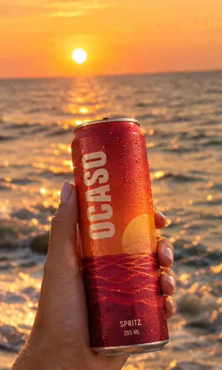
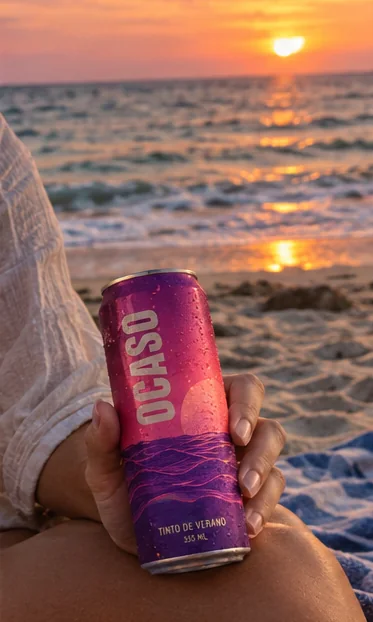
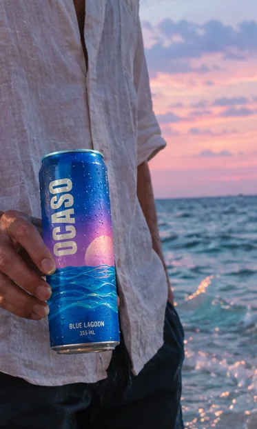
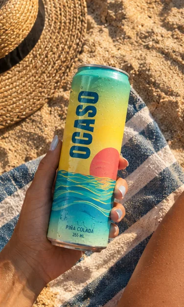

OCASO
Cuatro tragos de verano. Cada uno, su propio atardecer.
ScrolleáLa hora más linda del día no se toma apurada.
La marca
OCASO en vertical, condensada, igual en las cuatro latas.
El horizonte
Cada etiqueta parte la lata en cielo y mar a la misma altura.
El sol
Cambia de color con el trago, siempre en el mismo lugar.
En la playa
Un trago para cada luz
Cuatro momentos de la misma tarde, del primer reflejo a la última luz.




Cómo se toma
El ritual
- 01
Enfriala.
- 02
Abrila.
- 03
Mirá el horizonte.
Probalo
Armá tu atardecer
Tocá una lata y cambiá el cielo.
Spritz
Pack x4
Los cuatro atardeceres
Una lata de cada trago, para probarlos todos este verano.
Quiero el packDónde encontrarla
- ParadoresCosta atlántica, de diciembre a marzo.
- Almacenes y vinotecasEn la ciudad, en la heladera de siempre.
- Tienda onlinePacks de 4 latas, uno de cada atardecer.